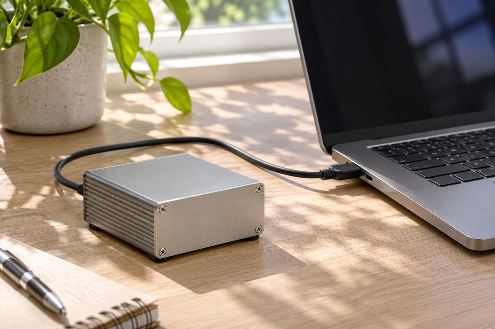

전자기기 / EXPLAINED
ASUS XG Core, USB4로 노트북에 라데온 그래픽 연결
16GB 전용 메모리를 갖춘 외장 그래픽 장치다. 연결 단자와 호스트 지원을 함께 봐야 한다.

ASUS는 11월 6일 라데온 RX 9060 XT LP와 16GB GDDR6를 결합한 XG Core 외장 그래픽 장치를 발표했다. 앞서 IBC 전시에서 제작용 장비로 소개한 뒤, 공식 발표에서 노트북과 소형 PC, 휴대용 게임기를 USB4로 연결하는 구성을 설명했다. 11월 6일은 발표일이며 지역별 판매일, 가격, 재고는 이 발표에서 확인되지 않는다.
ASUS는 PC와 그래픽카드, 주변기기를 만드는 회사다. 외장 GPU는 그래픽 연산을 노트북 안의 칩 대신 외부 장치에 맡길 수 있게 한다. 화면을 만들거나 영상 효과를 계산할 때 도움이 될 수 있고, 호환되는 소프트웨어에서는 로컬 AI의 연산에도 사용할 수 있다. 제품이 제공하는 16GB는 그래픽 장치가 직접 쓰는 전용 메모리다. 노트북의 시스템 메모리가 자동으로 16GB 늘어나거나 프로그램 전체가 그 공간을 자유롭게 쓴다는 뜻은 아니다.
USB4의 최대 40Gbps는 연결에서 제시하는 전송 규격이다. 초당 40기가비트를 바이트로 단순 환산하면 5GB/s지만, 실제로는 프로토콜 처리와 다른 신호가 대역폭을 사용한다. 그래픽카드와 기판이 내부에서 사용하는 연결 방식과 같은 실효 속도로 간주할 수 없다. 이미 외부 장치의 메모리에 올라간 데이터를 반복 연산하는 작업과, 이미지나 모델의 일부를 호스트에서 자주 보내는 작업은 연결 부담이 달라진다.
USB-C는 단자의 모양이고 USB4는 전송 기능이다. 같은 모양의 포트라도 외장 그래픽을 지원하는지는 노트북이나 휴대용 게임기의 사양과 펌웨어가 결정한다. ASUS는 호환되는 썬더볼트 3 장치도 안내하지만, 포트에 케이블이 꽂힌다는 이유만으로 외장 GPU가 동작하는 것은 아니다. 케이블의 지원 규격과 운영체제 및 드라이버, 전원 연결 요구도 함께 확인해야 한다.
장치에 붙은 HDMI와 디스플레이포트로 외부 모니터를 연결할 수 있다. 작업에 따라 외장 GPU에서 만든 화면을 노트북 내장 패널로 다시 보내는 방식과 장치에서 외부 화면으로 바로 출력하는 구성의 데이터 흐름이 다를 수 있다. 편집부는 모니터를 이미 갖춘 작은 작업 공간이나, 이동할 때 가벼운 본체를 쓰고 돌아와 그래픽 성능을 더하려는 경우에 비교할 만하다고 본다. 독립 게임 성능이나 장시간 소음은 공개 자료에서 확인되지 않았다.
메모리 용량만으로 실행 가능한 AI 모델의 크기를 정하기도 어렵다. 모델을 저장하는 정밀도 외에 입력 길이, 처리 중 임시 데이터와 화면 출력에 사용하는 공간이 함께 들어가기 때문이다. 그래픽 도구가 설치된다고 그 프로그램의 모든 기능이 해당 GPU에서 같은 방식으로 가속되는 것도 아니다. 평소 쓰는 프로젝트의 크기와 소프트웨어 호환 목록을 대조하면 16GB 수치가 자신의 작업에서 어떤 의미가 있는지 판단하기 쉽다.
ASUS가 제시한 ComfyUI, LM Studio, Ollama 사례에도 소프트웨어 버전과 모델의 지원 조건이 붙는다. 구매 판단에는 그래픽 메모리 크기, 실제 쓰는 앱에서의 지원과 케이블 연결 환경을 함께 봐야 한다. 국내 가격과 출시 시점, 기존 데스크톱 GPU와 동일한 조건에서 비교한 측정값은 추후 확인할 항목이다.